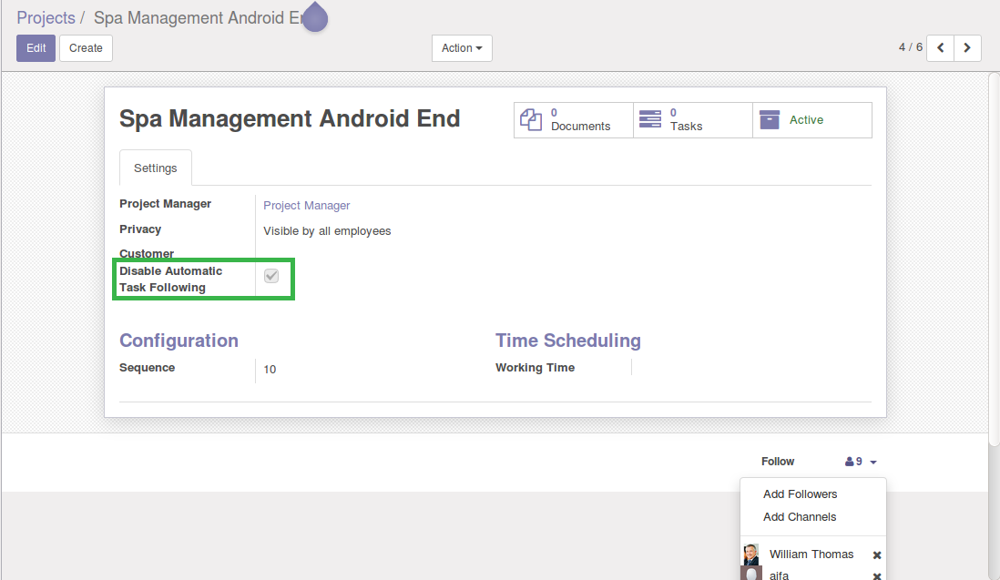
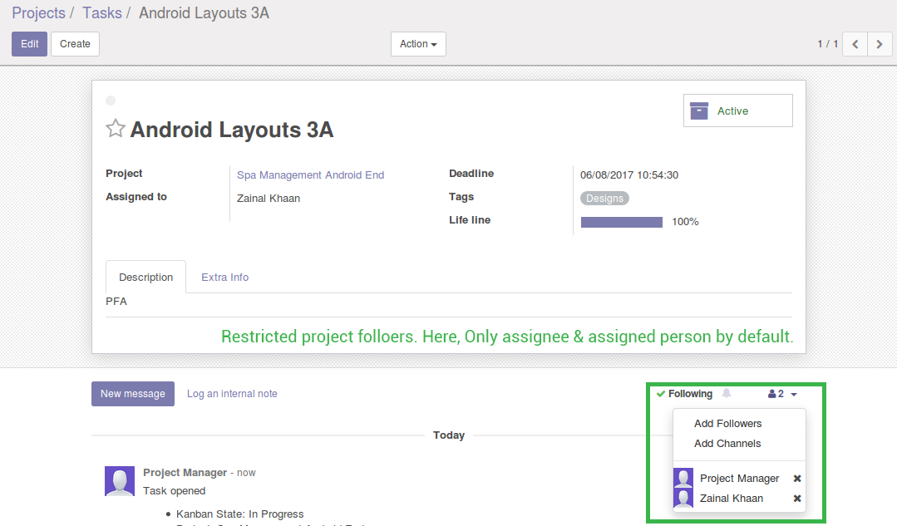

Disable Auto Task Following
Only assigned & created person will follow the task, Restrict other followers of project
Author : Cybrosys Techno Solutions , www.cybrosys.com
Features:
- → Option to Disable Automatic Task Following From Project Followers
- → User Can Add Custom Followers to Task
Option Disable Automatic Task Following

Only assignee & Assigned Person will Follow the Task By Default
